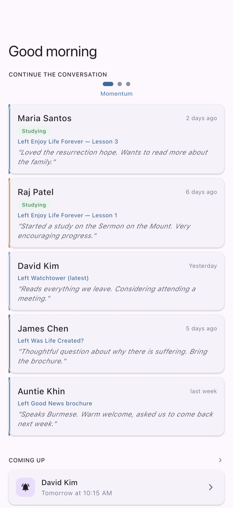
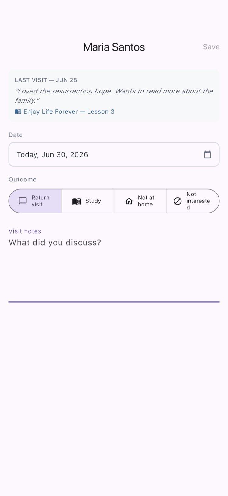
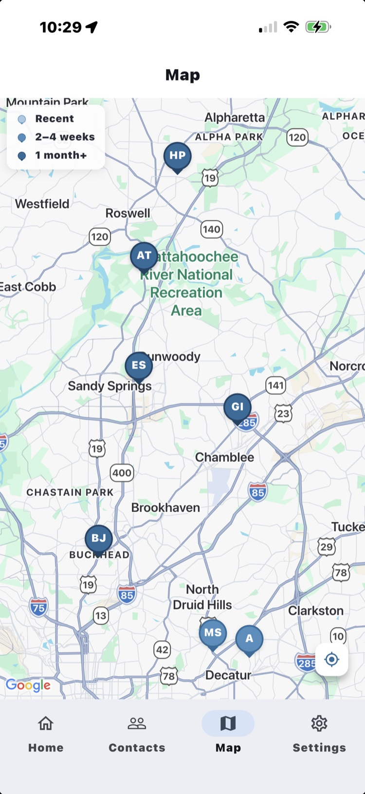

The Open Door
Continue the conversation.
An easy to use, helpful app so you can fully accomplish your ministry. Remember the people you meet and the conversations to continue.
An easy to use, helpful app so you can fully accomplish your ministry. Remember the people you meet and the conversations to continue.
Your home screen shows you the next person to see — ranked by how things are going with them, nearest to you, or longest since your last visit.

Make your notes in seconds — not-at-home, return visit, Bible study, and more. Note the literature you placed and edit the date if you logged it later.

Contacts appear on the map around your current location. One tap opens directions in your favourite maps app, or text the driver your call's address so they can drive you to it!

Free to use. Private by design. Yours in a couple of taps.